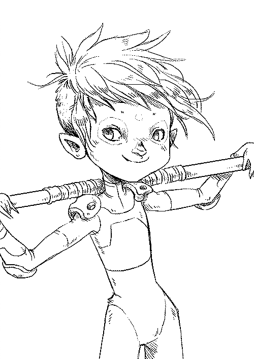
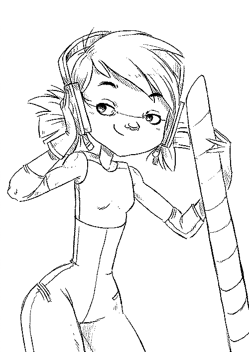
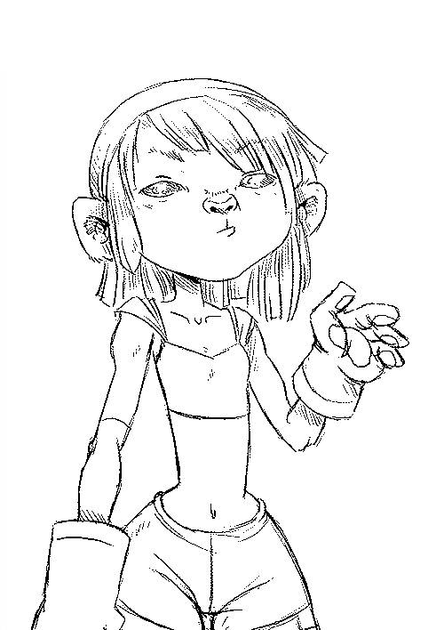
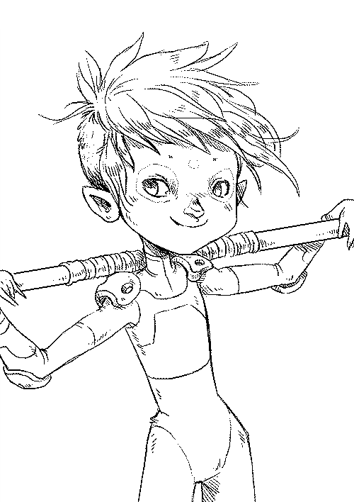
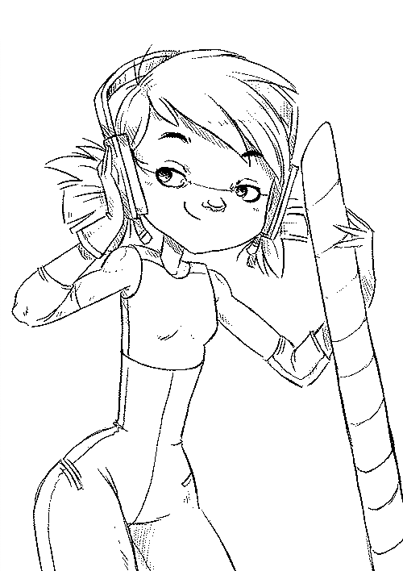
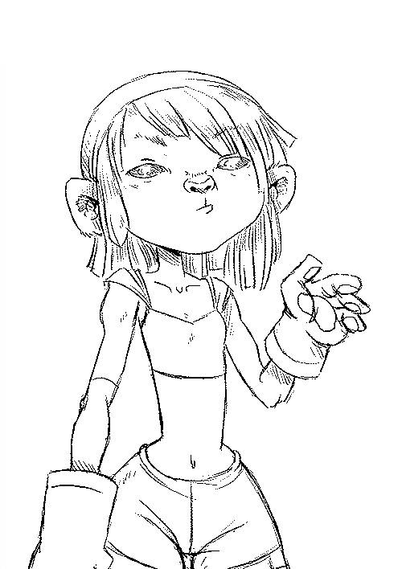
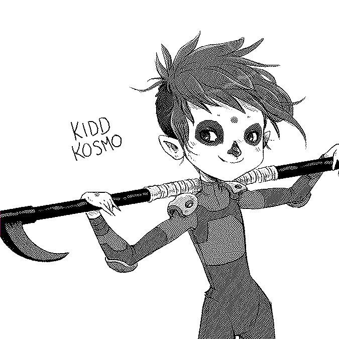
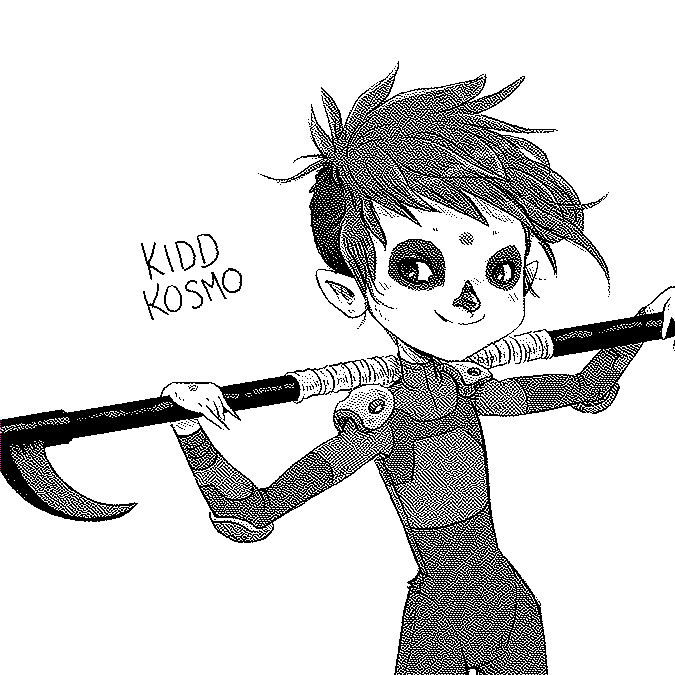
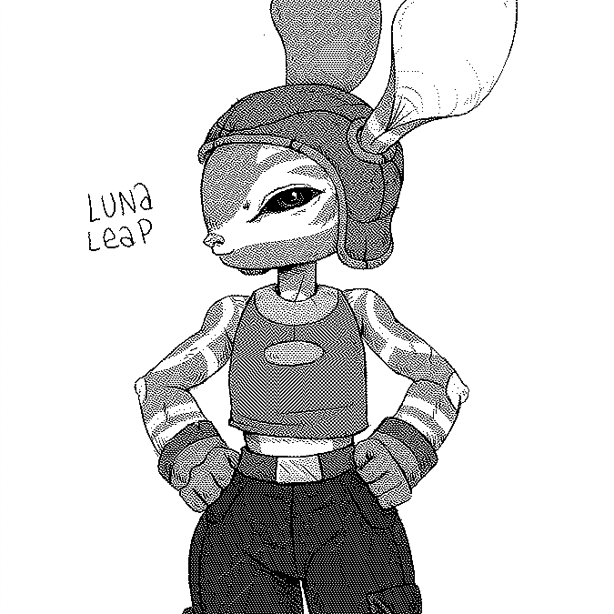
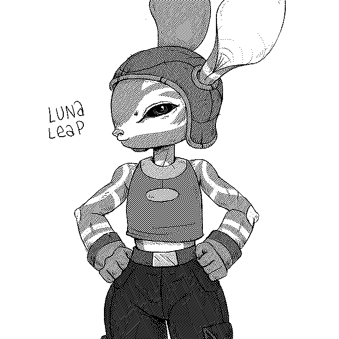

About
About Projects
Projects Books
Books Games
Games Stories
Stories Store
Store Notes
Notes How-to
How-toA story about a league of misfits called "Medussa's four", who race through the Austral system using non-regulated means of propulsion.
Meet the characters of Medussa's Four.
 





Encela, grandparent of luna leap, is banned from the "Belt Championship" by the IFS (interplanetary federation of ships) for breaking rules relating to race technique and style. The IFS has been poisoned by greed, their monopoly of transport and racing that spans many systems, Encela feels, is downright disgusting.
In reaction to this, Luna - who has prodigious skill with the taming, and riding of wild cyclomedussas - forms xem own league dedicated not to form and rules, but to the simple test of superior speed. The group also advocates for the 'right to build and use one's own transport', a thing the IFS has made illegal. This league of misfits, referred to as The Medussa's Four, includes luna leap, space panda, straw surfer and kidd kosmo.
In these races, the participants race through the Austral system - which consists of a multitude of tiny planets and moons - and use the relative movement and gravity of the planets or other astronomical object to increase their speed.
Their movement aims to dismantle the unfair regulations that has been strangling the habitants of the Australs for many cycles now.
HISTORY
The Lepori, Denurith and Ursada all stem from the Homini, from ships that left their homeplanet Retna to explore the grandioseness that is their universe (The Australs). They lived aboard their ships for thousands of years, keeping some contact, while evolving as separate species. Many years later, they resolved to live near one another again, with the stars growing dark togetherness and harmony has never been so important. They steered their ships back over to Retna, the only planet capable of sustaining life, now a center of exchange of goods and knowledge and the place where all 4 races can go to live as equals.
2 now orbit the planet in their ships, all, but the Ursada's ship "The Arkto" that was decommissioned due to various technical problems. Now, the Ursada live on Retna's soil.
Medussa was the name of the station orbitting Retna, the base model for the 3 generational travel ships that departed long ago, the 3 being The Santoshi Mata, Arkto and the Leveret.
ART
 

 
